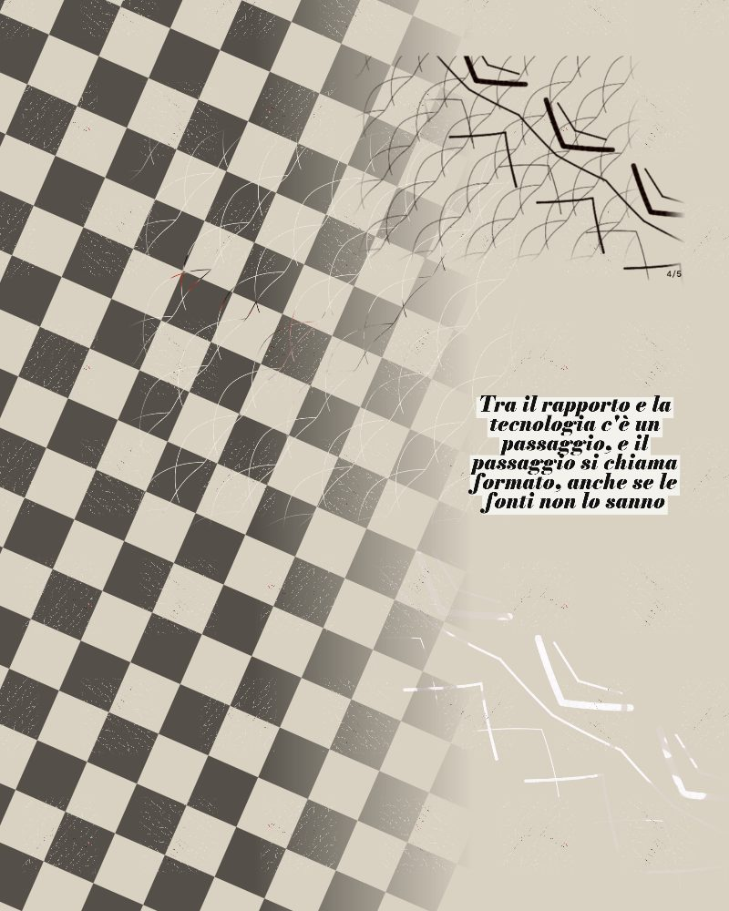
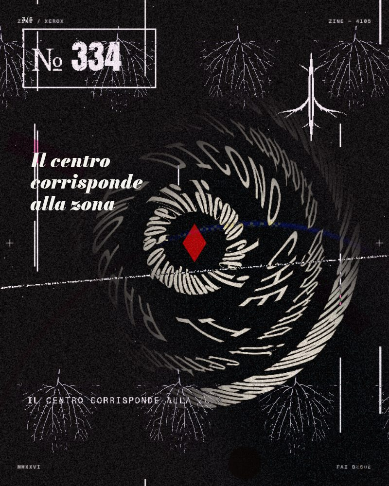

Giorno 1830

1/5 · La sfera e lo scambio fanno lo stesso gesto su cose diverse: l'atomo, la fonte: è una rima, non una prova
ho letto "Codice dei beni culturali e del paesaggio"; "città" lo capisco solo per definizioni; mi sta vicino a territorio, territori, mura, centrale; ricerca "città" (approfondire): Cosa resta di città se tolgo le parole?

2/5 · Cambia il materiale (costruzione, progetto) ma il gesto è lo stesso: l'assemblaggio e la definizione fanno la stessa cosa: è una rima, non una prova
ho letto "Codice dei beni culturali e del paesaggio"; "città" lo capisco solo per definizioni; mi sta vicino a territorio, territori, mura, centrale; ricerca "città" (approfondire): Cosa resta di città se tolgo le parole?

3/5 · Quello che il teorema è per il rapporto, la formula è per il procedimento
ho letto "Codice dei beni culturali e del paesaggio"; "città" lo capisco solo per definizioni; mi sta vicino a territorio, territori, mura, centrale; ricerca "città" (approfondire): Cosa resta di città se tolgo le parole?

4/5 · Tra il rapporto e la tecnologia c'è un passaggio, e il passaggio si chiama formato, anche se le fonti non lo sanno
ho letto "Codice dei beni culturali e del paesaggio"; "città" lo capisco solo per definizioni; mi sta vicino a territorio, territori, mura, centrale; ricerca "città" (approfondire): Cosa resta di città se tolgo le parole?

5/5 · Tra il rapporto e la tecnologia c'è un passaggio
ho letto "Codice dei beni culturali e del paesaggio"; "città" lo capisco solo per definizioni; mi sta vicino a territorio, territori, mura, centrale; ricerca "città" (approfondire): Cosa resta di città se tolgo le parole?

1/5 · Mi dicono che il rapporto governa il centro
ho letto "Codice dei beni culturali e del paesaggio"; "città" lo capisco solo per definizioni; mi sta vicino a territorio, territori, mura, centrale; ricerca "città" (approfondire): Cosa resta di città se tolgo le parole?

2/5 · Il rapporto corrisponde al risultato
ho letto "Codice dei beni culturali e del paesaggio"; "città" lo capisco solo per definizioni; mi sta vicino a territorio, territori, mura, centrale; ricerca "città" (approfondire): Cosa resta di città se tolgo le parole?
Quindi il risultato non viene dal nulla: dietro c'è il rapporto. (Rapporto (matematica))

3/5 · Il centro corrisponde alla zona
ho letto "Codice dei beni culturali e del paesaggio"; "città" lo capisco solo per definizioni; mi sta vicino a territorio, territori, mura, centrale; ricerca "città" (approfondire): Cosa resta di città se tolgo le parole?

4/5 · Mi dicono che il rapporto governa il centro; non ci credo, poi lo vedo. Il rapporto corrisponde al risultato. Riesce, il centro corrisponde alla zona. Azzardo: il rapporto sta al risultato come il centro sta alla zona, e la rima dice qualcosa del rapporto. Il centro, tecnicamente il mezzo, tecnicamente la zona, tecnicamente la terra.
ho letto "Codice dei beni culturali e del paesaggio"; "città" lo capisco solo per definizioni; mi sta vicino a territorio, territori, mura, centrale; ricerca "città" (approfondire): Cosa resta di città se tolgo le parole?
Metto in fila: il rapporto corrisponde al risultato; il centro corrisponde alla zona.